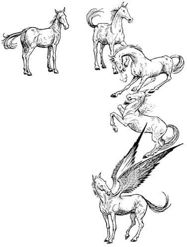
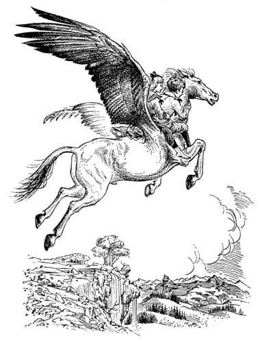
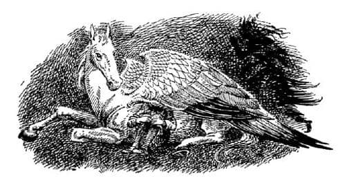

Çilek’in Macerası
Digory dudaklarını ısırıyordu. Gittikçe daha fazla ikircikleniyordu. Ne olursa olsun ağlamamayı ya da gülünç bir şey yapmamayı umuyordu.
“Adem’in oğlu” dedi Aslan. “Benim şirin ülkem Narnia’ya doğum gününde yaptığın kötülüğü düzeltmeye hazır mısın?”
“Şey, ne yapabileceğimi bilmiyorum” dedi Digory. “Görüyorsun ki Kraliçe kaçtı ve—”
“Sana hazır olup olmadığını sordum” dedi Aslan.
“Evet” dedi Digory. Bir saniye için aklından çılgınca bir fikir geçmişti ve “Anneme yardım etmeye söz verirsen ben de sana yardım etmeyi denerim” demeyi düşünmüştü, ama Aslan’ın pazarlık edilecek türden bir kişi olmadığını tam zamanında anlamıştı. Ancak “Evet” dediğinde annesini düşünmüştü. Umudunun azalmakta olduğunu hissederek boğazı düğümlendi, gözleri yaşardı ve düşünmeden dedi ki:
“Fakat lütfen, lütfen – sen – annemi iyi edecek bir şey veremez misin?” O ana kadar Aslan’ın kocaman pençeli büyük ayaklarına bakmaktaydı, şimdi kederle başını kaldırıp Aslan’ın yüzüne baktı. Gördüğü, tüm yaşamında gördüklerinden daha şaşırtıcıydı. Çünkü o kahverengisarı yüz, kendi yüzüne doğru eğilmişti ve gözlerinde iri, parlak gözyaşları vardı. Öyle büyük ve parlak gözyaşlarıydı ki Digory bir an için Aslan’ın, annesinin durumuna kendinden daha çok üzüldüğünü sandı.
“Oğlum, oğlum” dedi Aslan. “Biliyorum. Üzüntümüz büyük. Bunu bu ülkede sadece sen ve ben biliyoruz. Birbirimize nazik davranalım. Fakat ben Narnia’nın geleceğini düşünmek zorundayım. Bu dünyaya getirdiğin Cadı, Narnia’ya yeniden gelecek; er ya da geç. Narnia’ya, onun yaklaşmaya cesaret edemeyeceği bir ağaç dikmeyi arzuluyorum, bu ağaç Narnia’yı uzun yıllar ondan koruyacaktır. Böylece bu ülke, bulutlar güneşi kaplamadan önce uzun ve aydınlık bir sabah geçirecek. Sen, bu ağacın yetişeceği tohumu bana getirmelisin.”
“Peki, efendim” dedi Digory. Bunu nasıl yapacağını bilmiyordu ama başaracağından neredeyse emindi. Aslan derin bir nefes aldı, başını daha da alçaltarak ona bir Aslan öpücüğü verdi. Digory o an taze bir güç ve cesaret kazandığını hissetti.
“Sevgili oğlum” dedi Aslan, “sana ne yapman gerektiğini söyleyeceğim. Dön ve batıya bak, ve bana ne gördüğünü söyle.”
“Görkemli dağlar görüyorum, Aslan” dedi Digory. “Bir nehrin çağlayan halinde kayalıklardan aşağı aktığını görüyorum. Ve kayalıkların ötesinde ormanlık, yüksek yeşil tepeler, onların ötesinde neredeyse simsiyah görünen daha yüksek sıradağlar var. Çok uzakta da, Alpler’in görüntüsü gibi, hepsi bir arada yüksek karlı dağlar var. Ve bunların arkasında gökyüzünden başka bir şey yok.”
“İyi görüyorsun” dedi Aslan. “Çağlayanın olduğu yerde Narnia ülkesi sona erer, ve sen kayalıkların üstüne eriştiğinde Narnia’dan çıkmış ve batının vahşiliklerine girmiş olacaksın. O dağların arasında, etrafı buz tepeleriyle çevrili, içinde mavi bir gölün bulunduğu yeşil bir vadi bulana kadar ilerlemelisin. Gölün sonunda sarp ve yeşil bir tepe var. Tepenin üzerinde bir bahçe ve bahçenin ortasında da bir ağaç. O ağaçtan bir elma kopar ve bana getir.”
“Peki, efendim” dedi Digory yine. O kayalıklara nasıl tırmanacağı ve dağlar arasında yolunu nasıl bulacağı hakkında en ufak bir fikri yoktu. Bahane arıyormuş gibi görünmemek için bu konuda bir şey sormadı, fakat “Aslan, umarım acelen yoktur. Oraya hızla gidip gelmem mümkün değil.” dedi.
“Adem’in küçük oğlu, sana yardım edilecek” dedi Aslan. Sonra, yanıbaşlarında sessizce duran, sinekleri kovalamak için kuyruğunu sallayan ve sanki konuşulanları zorlukla anlıyormuş gibi başı bir yana eğilmiş olarak dinleyen ata döndü.
“Can dostum” dedi Aslan At’a, “kanatlı bir at olmak ister misin?”
Çilek’in yelesini nasıl sallayıp, burun deliklerinin nasıl genişlediğini ve arka ayağıyla yere hafifçe nasıl vurduğunu görmeliydiniz. Belli ki, kanatlı bir at olmayı çok istiyordu, ama yalnızca şunları söyledi:
“Eğer isterseniz Aslan – gerçekten istiyorsanız – neden beni seçtiniz bilmiyorum – ben pek akıllı bir at değilim.”
“Kanatlan. Tüm kanatlı atların babası ol” dedi Aslan yeri sarsan bir kükremeyle, “Senin adın Kızılkanat.”
At ürkmüştü, tıpkı arabaya koşulduğu o eski, sefil günlerde ürktüğü gibi. Sonra kişnedi. Sanki omuzlarını sinek ısırıyormuş da kaşınmak istiyormuş gibi, boynunu geriye doğru zorluyordu. Sonra, diğer hayvanlar yerden nasıl fırladıysa Kızılkanat’ın omuzlarından da kanatlar fırladı ve kartalların, kuğuların ve kilise pencerelerindeki meleklerin kanatlarından fazla büyümeye başladı. Tüyleri bakır ve kestane renginde parıldıyordu. Kanatlarını iyice açarak havaya sıçradı. Aslan’ın ve Digory’nin elli metre kadar üstünde homurdandı, kişnedi ve şaha kalkar gibi yaptı. Sonra onların etrafında bir tur atıp, şaşırmışçasına ve hantalca ama mutlu bir şekilde dört ayağı üzerine yere indi.

“İyi mi, Kızılkanat?” dedi Aslan.
“Mükemmel, Aslan” dedi Kızılkanat.
“Adem’in bu küçük oğlunu, sırtında, sözünü ettiğim dağlardaki vadiye götürür müsün?”
“Ne? Şimdi mi? Hemen mi?” dedi Çilek – ya da yeni adıyla Kızılkanat – “Haydi! Gel buraya küçük. Sırtımda senin gibi şeyleri daha önce de taşımıştım; uzun zaman önce. Yeşil tarlalar ve şekerlerin olduğu zamanlarda.”
“Havva’nın kızları ne fısıldaşıyorlar öyle?” dedi Aslan, gerçekten dost olmaya başlayan Polly ve Arabacı’nın karısına aniden dönerek. “İzin verirseniz efendim” dedi Kraliçe Helen (Arabacı’nın karısı Nellie artık Kraliçe Helen’di) “sanırım küçük kız da gitmek istiyor, eğer sorun olmayacaksa.”
“Kızılkanat buna ne diyor?” diye sordu Aslan.
“Ah, iki kişi. Fark etmez, hele böyle küçükseler” dedi Kızılkanat. “Ama umarım Fil de gelmek istemiyordur!”
Doğrusu Fil’in böyle bir isteği yoktu ve Narnia’nın yeni kralı, iki çocuğun da ata binmesine yardım etti: Digory’yi kabaca kaldırırken, Polly’yi sanki porselenden yapılmış ve kırılacakmış gibi zarifçe ve itinayla oturttu. “İşte bindiler Çilek – Kızılkanat demeliyim artık. Asla tahmin etmediğimiz şeyler bunlar.”
“Çok yüksekten uçma” dedi Aslan. “Büyük buz dağlarının tepelerinden geçmeyi deneme. Yeşillik yerleri ve vadileri bul ve oralardan uç. Her zaman geçeceğin bir yer olacak. Ve şimdi benim dualarımla gidin.”
“Ah, Kızılkanat” dedi Digory, At’ın parlak boynunu okşamak üzere eğilirken. “Bu çok eğlenceli. Bana sıkı tutun Polly.”
Az sonra yeryüzü ayaklarının altından kaydı ve Kızılkanat, batıya doğru uzun uçuşuna başlamadan önce sanki büyük bir keklikmiş gibi, bir iki tur attı. Polly aşağıya baktığında Kral ve Kraliçe’yi zorlukla görebiliyordu. Aslan bile yeşil otlar üzerinde sadece sarı bir noktaydı. Az sonra rüzgâr yüzlerini okşuyor ve Kızılkanat’ın kanatları düzenli bir şekilde dalgalanıyordu.
Değişik türden ağaçları, süpürge gibi otları, kayaları ve çok renkli çıplak ovalarıyla tüm Narnia altlarında uzanıyordu ve nehir gümüş bir kurdele gibi kıvrılarak akıyordu. Daha şimdiden sağ taraflarında, kuzeydeki alçak tepelerin arkasını görebiliyorlardı; tepelerin ötesinde büyük bir bozkır, tatlı bir eğimle ufka kadar uzanıyordu. Sol taraflarında dağlar çok daha yüksekti. Fakat arada bir, dik çam ağaçlarının arasından, uzaklarda mavi renge bürünen öte yandaki toprakları görebiliyorlardı.
“Archenland orası olmalı” dedi Polly.
“Evet, ama önüne bak!” dedi Digory.
Çünkü şimdi önlerinde, sarp kayalıkların oluşturduğu set yükselmekteydi. Doğduğu yüksek, batı ülkesinden Narnia’ya çağlayarak akan nehrin oluşturduğu çağlayanda yansıyan güneşin ışıkları neredeyse gözlerini kamaştırıyordu. O kadar yüksekten uçuyorlardı ki, aşağıdaki çağlayanların gürültüsü çok hafif bir ses olarak duyuluyordu, ama kayalıkların tepesinden uçacak kadar da yüksekte değildiler.
“Burada biraz zikzak çizeceğiz” dedi Kızılkanat, “sıkı tutunun.”
Her dönüşte daha da yükselerek bir sağa bir sola uçmaya başladı. Hava soğumuştu ve aşağılardan kartalların seslerini işitebiliyorlardı.
“Geriye bak diyorum, arkana bak” dedi Polly.
Arkalarında tüm Narnia vadisinin, denizin parıltısının görüldüğü doğudaki ufuk çizgisinin biraz altına kadar uzandığını görebiliyorlardı. Ve şimdi o kadar yüksekteydiler ki kuzeybatıda, kırların ötesinde küçücük görünen sivri dağları ve güneyde, uzakta, çöl gibi görünen düzlükleri görüyorlardı.

“Keşke oraların neresi olduğunu söyleyecek biri olsaydı yanımızda” dedi Digory.
“Oraların bir yer olduğunu sanmıyorum, dedi Polly. “Yani daha kimse yok orada ve hiçbir şey olmuyor. Dünya daha bu sabah yaratıldı.”
“Evet, ama insanlar oraya gidecek” dedi Digory. “Ve sonra bir tarihe sahip olacaklar, biliyorsun.”
“Eh, iyi ki şimdi tarihleri yok” dedi Polly. “Çünkü kimseyi onu öğrenmeye zorlayamazsın. Savaşlar, tarihler ve tüm o palavralar.”
Şimdi kayalıkların tepesini aşmışlardı ve birkaç dakika içinde Narnia’nın vadileri arkalarında kayboldu. Hâlâ nehrin yatağını izleyerek dik tepelerden ve karanlık ormanlardan oluşan vahşi bir ülke üzerinde uçuyorlardı. Gerçek, büyük dağlar önlerinde heyulâ gibi yükseliyordu. Güneş gezginlerimizin gözlerini alıyordu ve gittikleri yöndeki şeyleri açık seçik göremiyorlardı çünkü, batıdaki bütün gökyüzü erimiş altınla dolu bir fırınmış gibi görünene kadar alçaldıkça alçalmıştı. Sonunda güneş, aydınlığın önünde sanki kartondan kesilmiş gibi, dümdüz ve keskince dikilen sivri tepenin arkasından battı.
“Burası pek sıcak değil” dedi Polly.
“Ve benim de kanatlarım ağrımaya başladı” dedi Kızılkanat. “Aslan’ın dediği, içinde göl olan vadi görünürlerde yok. Aşağı inip geceyi geçirecek iyi bir yer bulmaya ne dersiniz? Oraya bu gece ulaşamayacağız.”
“Evet, eminim akşam yemeği zamanı da gelmiştir” dedi Digory.
Böylece Kızılkanat, yavaş yavaş alçaldı. Tepelerin arasında yere yaklaştıkça hava ısındı ve saatlerce Kızılkanat’ın kanat seslerinden başka bir şey duymadan seyahat ettikleri için yeniden değişik sesler – nehrin taşlık yatağında şakırdayışı ve ağaçların hafif rüzgârda çıtırdayışı – duymak hoşlarına gitti. Güneşin ısıttığı toprağın, çiçeklerin, otların sıcak ve tatlı kokusunu hissettiler. Sonunda Kızılkanat yere kondu. Digory aşağı indi ve Polly’nin de inmesine yardım etti. İkisi de uyuşuk bacaklarını yeniden hareket ettirdiklerine memnundular. İndikleri vadi dağların tam ortasındaydı; batan güneşin ışığıyla gül kırmızısı görünen karlı tepelerden biri, üstlerinde yükseliyordu.
“Karnım aç” dedi Digory.
“Tıka basa yiyin” dedi Kızılkanat, bir ağız dolusu ot kopararak. Sonra otlar ağzının iki yanından bıyık gibi sarkarken çiğnemesini sürdürerek başını kaldırdı ve:
“Haydi gelin, utanmayın. Hepimize yetecek kadar var” dedi.
“Fakat biz ot yiyemeyiz ki” dedi Digory.
“Hımmm, hımmm” dedi Kızılkanat dolu ağzıyla konuşarak. “Şey, hımmm, ne yapacağınızı bilmiyorum o zaman. Bu otlar da çok lezzetli.”
Digory ve Polly birbirlerine umutsuzca baktılar.
“Birinin bizim yemeklerimizi ayarladığını sanıyordum” dedi Digory.
“Eğer sorsaydınız Aslan ayarlardı” dedi Kızılkanat.
“Ona sorulmadan bilmez mi?” dedi Polly.
“Bildiğine hiç kuşkum yok” dedi at (hâlâ ağzı otla dolu olarak). “Fakat soru sorulmasından hoşlandığını seziyorum.”
“Şimdi biz ne halt edeceğiz?” diye sordu Digory.
“Bunu bilmediğime eminim” dedi Kızılkanat. “Otları deneyebilirsiniz. Sandığınızdan daha fazla hoşlanacaksınız bence.”
“Of, gülünç olma” dedi Polly, ayağını yere vurarak. “Elbette insanlar ot yiyemez, senin kuzu pirzolası yiyemeyeceğin gibi.”
“Allah aşkına pirzoladan falan bahsetme” dedi Digory. “Bu her şeyi sadece zorlaştırıyor.”
Digory, Polly’ye yüzüğü kullanarak eve gitmesini ve orada bir şeyler yemesini, kendisinin gidemeyeceğini çünkü Aslan’a doğrudan oraya gitmeye söz verdiğini, ve yeniden eve döndüğü anlaşılırsa geri gelmesini engelleyecek bir şeylerin olabileceğini söyledi.
“Cebimde hâlâ karameladan artakalanlar var” dedi Polly. “Hiç yoktan iyidir.”
“Hem de çok iyi” dedi Digory, “yalnız elini cebine sokarken yüzüğe dokunmamaya dikkat et.”
Bu zor ve hassas bir işti ama sonunda başardılar. Karamelaları çıkardıklarında kese kâğıdı ezilmiş ve yapış yapış durumdaydı. Dolayısıyla sorun, karamelaları çıkarmak değil, kese kâğıdını karamelalardan yırtarak ayırmaktı. Yetişkinler (bazıları biliyorsunuz bu tür şeylerde çok titizdir) o karamelaları yemektense hiçbir şey yememeyi tercih ederdi. Toplam dokuz tane karamela vardı. Dörder tane yiyip dokuzuncuyu toprağa ekmek Digory’nin parlak fikriydi; “Eğer lamba direğinin çubuğu küçük bir lamba ağacına dönüştüyse, bu neden karamela ağacına dönüşmesin?” diyordu. Böylece yerde küçük bir çukur kazdılar ve karamelalardan birini gömdüler. Sonra diğerlerini tadını çıkararak ağır ağır yediler. Acınası bir yemekti; kâğıt parçalarını bile yemişlerdi.

Kızılkanat mükemmel akşam yemeğini tamamıyla bitirdiği zaman yere uzandı. Çocuklar gelip her iki yanına, onun sıcak vücuduna yaslanarak oturdular. Kızılkanat kanatlarıyla ikisini de örtünce ısınıp rahatladılar. Yeni dünyanın parlak ve genç yıldızları gökte görünmeye başladığında, her şeyi gözden geçirdiler; Digory’nin nasıl annesi için bir şeyler bulmayı umduğunu, fakat onun yerine nasıl bu göreve gönderildiğini konuştular. Ve birbirlerine, aradıkları yerleri bulmalarını sağlayacak olan işaretleri tekrarladılar – mavi göl ve tepesinde bir bahçe olan tepe. Uyku bastırdığında konuşmaları yavaşlamaya başlamıştı ki Polly aniden doğrularak “Şşşşşş!” dedi.
Hepsi kulak kesildi.
“Belki de ağaçların hışırtısıydı” dedi Digory az sonra.
“Ben pek emin değilim” dedi Kızılkanat. “Her neyse – bir dakika! İşte yine oluyor. Aslan aşkına, bir şeyler var orada!”
At ürkerek büyük bir gürültüyle ayağa kalktı; çocuklar zaten ayaktaydılar. Kızılkanat kişneyerek ve koklayarak ileri geri koşturdu. Çocuklar her çalının ve ağacın arkasına bakarak bir o yöne, bir bu yöne seğirttiler. Sürekli bir şeyler gördüklerini düşünüyorlardı ve Polly bir ara uzun boylu karanlık bir siluetin, batıya doğru, kayar gibi hızla uzaklaştığını gördüğünden adı gibi emindi. Ancak çabaları sonuç vermedi ve sonunda Kızılkanat yeniden uzandı ve çocukları kanatlarının altına aldı. Hemen uykuya daldılar. Kızılkanat karanlıkta kulaklarını sağa sola oynatarak ve bazen sanki üzerine sinek konmuş gibi gövdesini hafifçe titreterek uzun süre uyanık kaldı; fakat sonunda o da uyudu.